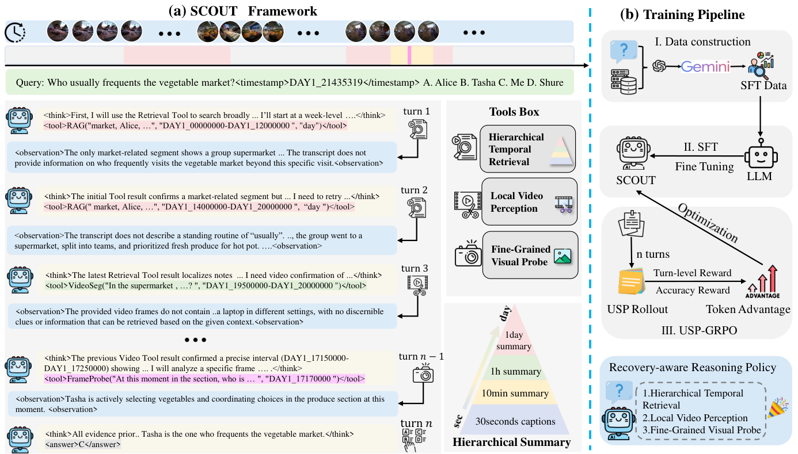
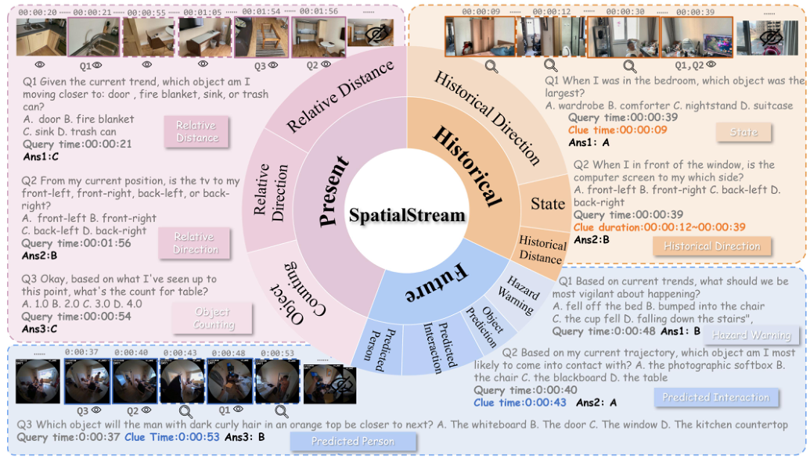

Spatial intelligence
Understanding 3D structure and how the world changes over time.
I'm Keyang, a Ph.D. student at Sun Yat-sen University. I study spatial intelligence, video understanding, and multimodal reasoning.
My research explores how AI can understand dynamic environments, remember what it has seen, and use tools to reason over long videos.
Explore my workUnderstanding 3D structure and how the world changes over time.
Seeing, remembering, and reasoning across continuous visual streams.
Building agents that reason, use tools, and learn from feedback.
Showing all 4 publications.

SCOUTRecovery-aware tool-using agents for reasoning over ultra-long egocentric videos.
@inproceedings{zhong2026scout,
title={{SCOUT}: Self-Checking and Recovery-Aware Tool-Thought Agents for Ultra-Long Egocentric Video Reasoning},
author={Zhong, Keyang and Wang, Kuo and Liu, Peng and Zheng, Quanlong and Xie, Junlin and Liang, Zhijia and Zhang, Yanhao and Li, Guanbin},
booktitle={Proceedings of the 34th ACM International Conference on Multimedia},
year={2026},
doi={10.1145/3767308.3835047}
}
StreamSpatialA benchmark and memory-based framework for reasoning about 3D space in continuous video streams.
@inproceedings{xie2026streamspatial,
title={{StreamSpatial}: A Benchmark and Framework for Streaming {3D} Visual-Spatial Reasoning},
author={Xie, Junlin and Zhong, Keyang and Zheng, Quanlong and Zhang, Ruifei and Wang, Kuo and Zhang, Yanhao and Lu, Haonan and Wan, Xiang and Li, Guanbin},
booktitle={Computer Vision -- ECCV 2026},
pages={575--591},
year={2026},
publisher={Springer},
doi={10.1007/978-3-032-37242-0_32}
}Collaborative agents and reinforcement learning for multimodal reasoning with incomplete and deceptive information.
@inproceedings{zhong-etal-2026-collaborative,
title = {Collaborative Multi-Agent Scripts Generation for Enhancing Imperfect-Information Reasoning in Murder Mystery Games},
author = {Zhong, Keyang and Xie, Junlin and Wu, Hefeng and Li, Haofeng and Li, Guanbin},
booktitle = {Findings of the Association for Computational Linguistics: ACL 2026},
month = jul,
year = {2026},
address = {San Diego, California, United States},
publisher = {Association for Computational Linguistics},
url = {https://aclanthology.org/2026.findings-acl.774/},
doi = {10.18653/v1/2026.findings-acl.774},
pages = {15796--15819}
}A live-streaming assistant combining product understanding, copywriting, and real-time audience question answering.
@misc{yu2026clicktoask,
title={{Click-to-Ask}: An {AI} Live Streaming Assistant with Offline Copywriting and Online Interactive {QA}},
author={Yu, Ruizhi and Zhong, Keyang and Liu, Peng and Wu, Qi and Zhang, Haoran and Zhang, Yanhao and Chen, Chen and Lu, Haonan},
year={2026},
eprint={2603.18649},
archivePrefix={arXiv},
primaryClass={cs.CV},
note={Accepted at WWW 2026 Demos},
doi={10.1145/3774905.3793134}
}Models, datasets, and benchmarks for understanding the world as it unfolds.
Yang011013 · ResourcesExplore streaming spatial reasoning through the lenses of now, history, and future.
OPPO-Mente-Lab · ECCV 2026Sun Yat-sen University
Research in spatial intelligence, video understanding, and multimodal reasoning, with a focus on dynamic scenes and tool-using agents.
Spatial intelligence, video reasoning, or a curious idea?
I'd be happy to connect.